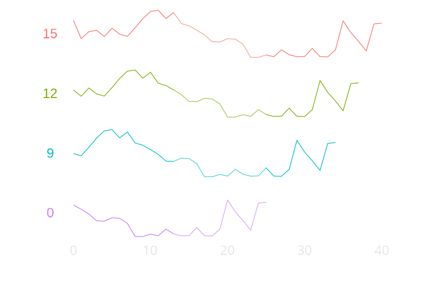
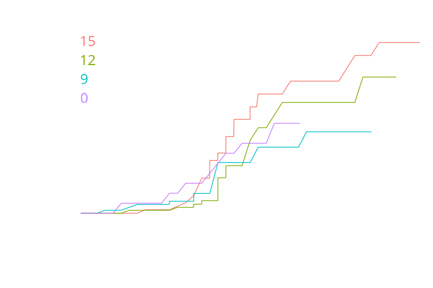
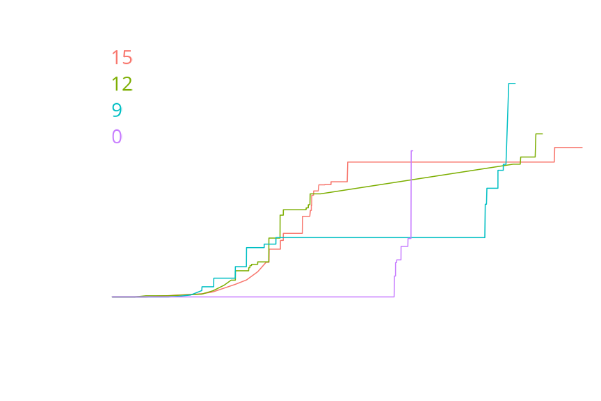
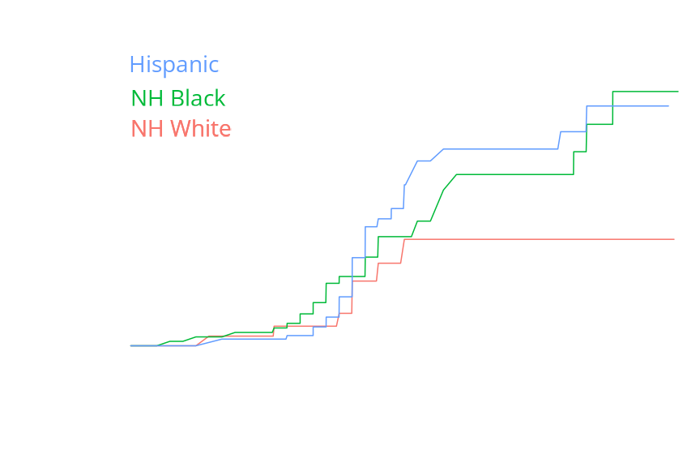
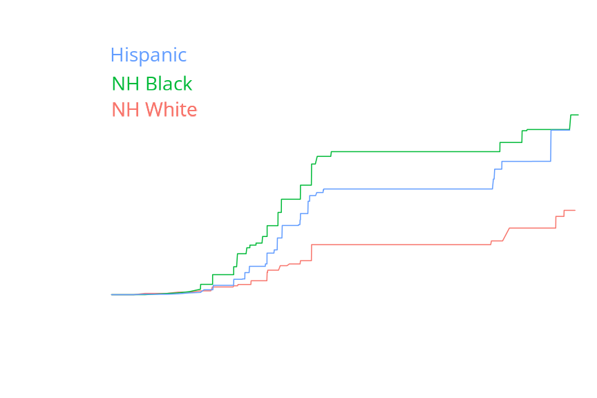

The Changing Risks of Exposure to Gun Violence in Chicago
Charles C. Lanfear Robert J. Sampson David S. Kirk Rebecca Bucci
Homicide Rates in Chicago
Enormous variation in homicide; early 1990s peak was double the period 2005-2015
Resurgence since 2017
Even during low periods, this is ten or more times the homicide rate of major European cities
Questions
How were children growing up in this period exposed to gun violence?
And how does this exposure differ…
… by cohort?
… by race and sex?
… by neighbourhood context?
We’ll be focusing mostly on cohort and race here.
The
Project on Human Development in Chicago Neighborhoods
- 6200 children in 7 birth cohorts
- Interviewed in 3 waves from 1995–2002
- Community surveys in 1995 and 2002
PHDCN+
- Representative sample of 4 cohorts
- 1057 interviewed in 2012
- 682 followed-up in 2021
- Focus: Gun Violence
Timeline

PHDCN+ covers much longer time period than original PHDCN: Age 0 to 40, 25 years within each cohort
Well past peak criminal involvement and exposure ages
Contexts of Violence

Align by age instead of year—see age-specific violence context
Age 13 to 25 highlighted as peak risk period
4 different patterns: High decline, medium decline, stable low, rising
Lifecourse Exposures to Gun Violence
Measures
Has the respondent…
- ever been shot?
- ever seen someone else get shot?
Problem: Interval censoring
Method: Non-parametric MLE (Turnbull 1976)
Been shot: cohort

Being shot happens mainly in young adulthood: 17 to 25
Cohort 0 has unusually high early age likelihood of being shot, but looks similar to 12 and 15 later on.
Seen shot: cohort

In contrast to being shot, witnessing shootings occurs mainly before age 20
Due to interval censoring, focus mainly on 9, 12, 15. Fairly similar. Hard to tell here, but cohort zero is unusual with low exposure.
Been shot: race/ethnicity

Illustrates again that being shot occurs later
No white respondents were shot after age 22, while black and Hispanic respondents saw exposures in recent period
Seen shot: race/ethnicity

Long plateaus are due to interval censoring: The upticks immediately afterward occurred somewhere in that period.
Again, we see Seeing someone shot happens earlier than being shot
Overall exposure lower for white respondents but, unlike being shot, ticks up in later ages, which are all the recent period
Risk and Protective Factors
Additional Measures
- Sex
- Immigrant generation
- Childhood neighbourhood context
- Collective efficacy
- Disadvantage
- Homicide rate
Method: Semi-parametric proportional hazards MLE (Anderson-Bergman 2017)
Estimates

Been shot is rare, so statistical power is low
Most patterns similar across outcomes, except cohort 0
Here the cohorts are proxying for any historical differences
This includes different overall city levels of violence
Very modest relationship between exposure and neighborhood measures; trumped by individual factors
Takeaways
Being shot tends to occur later in life than seeing shootings
- Seeing shootings more likely when homicide is high in adolescence
- Being shot more likely when homicide is high in early adulthood
Risk of being shot continues throughout adulthood for black and Hispanic but not white respondents
Seeing shootings much less common for white respondents
Appendix
References
Sampson, Kirk, & Bucci. 2022. “Cohort Profile: Project on Human Development in Chicago Neighborhoods and Its Additions (PHDCN+).” Journal of Developmental and Life-Course Criminology 8.
Turnbull. 1976. “The empirical distribution function with arbitrarily grouped, censored and truncated data.” Journal of the Royal Statistical Society: Series B (Methodological) 38(3):290-295.
Anderson-Bergman. 2017. “icenReg: Regression models for interval censored data in R.” Journal of Statistical Software 81(12):1–23.